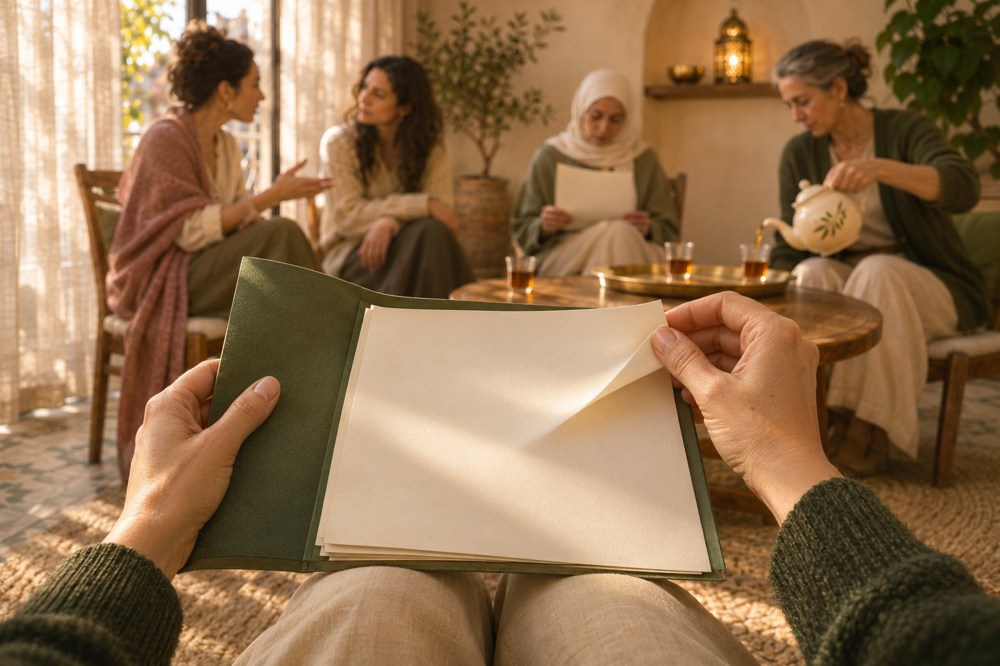
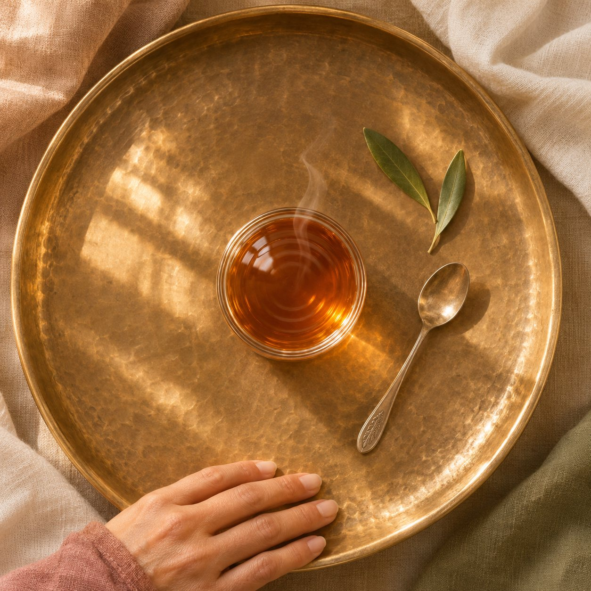

Mental health at workالصحة النفسية في العمل
Supports literacy, stress-management skills, and pathways to appropriate support.يدعم التوعية، مهارات التعامل مع التوتر، ومسارات الوصول إلى الدعم المناسب.
Read the WHO sourceقراءة مصدر منظمة الصحة العالمية
Founding edition · women onlyالإصدار التأسيسي · للنساء فقط
Saturday 5 Decemberالسبت 5 كانون الأول
15 seats · 3 hours with a break · printed EN/AR kit · 7-day WhatsApp follow-up15 مقعداً · 3 ساعات مع استراحة · حقيبة أدوات مطبوعة بالعربية والإنكليزية · متابعة عبر واتساب لسبعة أيام
Pay by Whish, OMT or cash before the day · seats held 48 hoursالدفع عبر Whish أو OMT أو نقداً قبل يوم اللقاء · يُحجز المقعد لمدة 48 ساعة
Reserve a seatاحجزي مقعدكِ Not this date? Join the list for the next circleالموعد لا يناسبكِ؟ انضمّي إلى قائمة الدائرة القادمةThe founding circleالدائرة التأسيسية
You do not need the perfect words before you arrive. Dorina starts with what is already there—a tense jaw, a fast answer, a heavy chest, a repeated yes—and helps you move through it one step at a time.لا تحتاجين إلى كلمات مثالية قبل أن تأتي. تبدأ دورينا مما هو موجود فعلاً—شدّ في الفك، جواب متسرّع، ثقل في الصدر، أو موافقة تتكرّر—وترافقكِ خطوة بخطوة لفهمه واختيار استجابة أوضح.
The result: less guessing, more language, and one step you can actually take.النتيجة: حيرة أقل، كلمات أوضح، وخطوة يمكنكِ تطبيقها فعلاً.
Dorina’s signature frameworkإطار دورينا الخاص
Six moves connect the in-room experience to a practical output.ستّ خطوات تربط ما يحدث في اللقاء بنتيجة عملية.
Begin with a 90-second Body Signal Scan, a comfortable breath reset, and optional breath-led movement. Attention comes before analysis.نبدأ بمسح سريع لإشارات الجسد لمدة ٩٠ ثانية، واستراحة تنفّس مريحة، وحركة اختيارية يقودها التنفّس. الانتباه يأتي قبل التحليل.
Move from “I feel bad” to one more precise word. Use the sentence: “I notice ___, and I may need ___.” No long explanation required.ننتقل من «أشعر أنني لست بخير» إلى كلمة أدق. نستخدم العبارة: «ألاحظ شعور ___، وقد أحتاج إلى ___.» من دون شرح طويل.
Map one everyday moment in order: situation → body signal → emotion → need → usual response. Seeing the order creates room for a different next move.نرسم لحظة يومية واحدة بالترتيب: الموقف ← إشارة الجسد ← الشعور ← الحاجة ← الاستجابة المعتادة. رؤية التسلسل تفتح مساحة لخيار مختلف.
Pause before the automatic answer. Rehearse one boundary phrase, one small action, or one request that fits the moment and your available energy.نتوقّف قبل الجواب التلقائي. نتدرّب على عبارة حدود، خطوة صغيرة، أو طلب يناسب اللحظة والطاقة المتاحة لديكِ.
Build three support rings: people for everyday listening, practical services for specific needs, and qualified support for anything beyond the scope of the circle.نبني ثلاث دوائر للدعم: أشخاص للاستماع في الحياة اليومية، خدمات عملية لحاجات محدّدة، ودعم مؤهّل لما يتجاوز نطاق الدائرة.
Condense the method into a Bad-Day Card, then practise one small part each day for seven days. The goal is repetition that fits real life.نختصر المنهج في «بطاقة اليوم الصعب»، ثم نجرّب جزءاً صغيراً منه يومياً لمدة سبعة أيام. الهدف هو تكرار يناسب الحياة الحقيقية.
The run of the morningمسار اللقاء
The same clear order every time, so you always know where you are and what comes next.الترتيب الواضح نفسه في كل مرة، فتعرفين دائماً أين أنتِ وما الخطوة التالية.
Times count from the start of the circle.تُحسب الأوقات من بداية الدائرة.
Tea, seats in a circle, and the agreements said aloud: your choice, the limits of the room, the right to pass, and where to turn for more support.شاي ومقاعد في دائرة، والاتفاقات تُقال بصوت عالٍ: حرية الاختيار، حدود المساحة، حقّ التجاوز، وإلى أين تتوجّهين إن احتجتِ دعماً أكبر.
0:00A guided body-signal scan, then in pairs: where does pressure visit you first?مسح موجّه لإشارات الجسد، ثم في ثنائيات: أين يزوركِ الضغط أولاً؟
0:15Precise-naming practice. The word is enough; no story is required.تدريب على التسمية الدقيقة. الكلمة تكفي، ولا حاجة إلى سرد قصة.
0:40Tea and a pause. Dorina checks in quietly with anyone who paused an exercise.شاي ووقفة قصيرة. تطمئنّ دورينا بهدوء على مَن توقّفت عن أي تمرين.
1:00The Trigger Map, on your own. Sharing is optional.خريطة المحفّز، بشكل فردي. المشاركة اختيارية.
1:10Boundary Phrase Lab: three phrases rehearsed aloud in pairs, and one chosen to keep.مختبر عبارات الحدود: ثلاث عبارات نتدرّب عليها بصوت عالٍ في ثنائيات، ونختار واحدة نحتفظ بها.
1:40Your Support Map: who to ask, and exactly what to ask for.خريطة دعمكِ: مَن تسألين، وماذا تطلبين تحديداً.
2:10Your Bad-Day Card, and how the seven days of follow-up work.بطاقة اليوم الصعب، وكيف تسير متابعة الأيام السبعة.
2:30One word each, and a two-minute anonymous feedback form.كلمة واحدة من كل مشارِكة، واستمارة تقييم مجهولة الاسم لدقيقتين.
2:55Atmosphereالأجواء
Warm light, tea, chairs in a circle and a printed kit on the table. Small enough that every woman is heard.ضوء دافئ، وشاي، ومقاعد في دائرة، وحقيبة أدوات مطبوعة على الطاولة. مساحة صغيرة تُسمَع فيها كل امرأة.
The pictures on this site are illustrations, not photographs of real people or of a past circle.الصور في هذا الموقع رسوم توضيحية، وليست صوراً لأشخاص حقيقيين أو لدائرة سابقة.
What you take homeما تأخذينه معكِ
A printed kit in Arabic and English for every seat, then a light follow-up on WhatsApp: one prompt, one small action, and a short reflection each day. No perfect streak required.حقيبة أدوات مطبوعة بالعربية والإنكليزية لكل مقعد، ثم متابعة خفيفة عبر واتساب: سؤال واحد، خطوة صغيرة، وملاحظة قصيرة كل يوم. لا حاجة إلى أداء مثالي.
Tap a sheet to read it. The four sheets are printed in Arabic and English.اضغطي على ورقة لقراءتها. الأوراق الأربع مطبوعة بالعربية والإنكليزية.
After the roomبعد انتهاء اللقاء
Write where it appears and what was happening.دوّني أين ظهرت وماذا كان يحدث.
Try it once before a routine reply.جرّبيها مرة قبل جواب معتاد.
Complete the sentence without explaining it away.أكملي العبارة من دون الدخول في تبرير طويل.
Use the five boxes while the moment is still clear.استخدمي الخانات الخمس بينما تبقى اللحظة واضحة.
Choose the shortest true sentence.اختاري أقصر عبارة صادقة.
Tell the person what would be useful.قولي للشخص ما الذي سيفيدكِ تحديداً.
Keep what helped; adjust what did not fit.احتفظي بما أفادكِ وعدّلي ما لم يناسبكِ.
Questionsأسئلة
The answers women usually ask for first. Anything else, ask Dorina directly.الأجوبة التي تسأل عنها النساء عادةً أولاً. ولأي سؤال آخر، اسألي دورينا مباشرة.
You arrive, take tea and a seat in the circle. Dorina guides the six CIRCLE moves with short worksheets, practice in pairs and a break, and you leave with your printed kit. The full run is just above.تصلين، تتناولين الشاي وتأخذين مكانكِ في الدائرة. ترافقكِ دورينا في خطوات CIRCLE الست مع أوراق عمل قصيرة وتمارين في ثنائيات واستراحة، وتخرجين بحقيبة أدواتكِ المطبوعة. المسار الكامل أعلاه.
Women who want practical, everyday tools for pressure, emotions and boundaries. No experience is needed. You can come on your own or with a friend.للنساء اللواتي يرغبن في أدوات عملية يومية للتعامل مع الضغط والمشاعر والحدود. لا حاجة إلى أي خبرة سابقة. يمكنكِ المجيء وحدكِ أو مع صديقة.
No. The work can stay private. Women may reflect, write, practise, or pass—without being pushed to tell a personal story. Nothing you say becomes content or marketing.لا. يمكن أن يبقى العمل شخصياً. تستطيع المرأة أن تفكّر، تكتب، تجرّب، أو تتجاوز أي تمرين من دون ضغط لسرد قصة خاصة. لا يتحوّل ما تقولينه إلى محتوى أو تسويق.
Nothing but yourself. The printed kit, pens and tea are ready for you. Comfortable clothes help for the short, optional seated movement.لا شيء سوى نفسكِ. حقيبة الأدوات المطبوعة والأقلام والشاي جاهزة لكِ. الملابس المريحة تساعد في الحركة القصيرة الاختيارية أثناء الجلوس.
Dorina works in Arabic, English and French, and the printed kit comes in Arabic and English.تعمل دورينا بالعربية والإنكليزية والفرنسية، وحقيبة الأدوات مطبوعة بالعربية والإنكليزية.
Pay by Whish, OMT, or cash by arrangement before the day. Your seat is confirmed once payment is received and held for 48 hours.الدفع عبر Whish أو OMT، أو نقداً بالاتفاق قبل يوم اللقاء. يُثبَّت مقعدكِ عند استلام الدفع، ويبقى محجوزاً لمدة 48 ساعة.
After you reserve, Dorina sends you the payment details on WhatsApp. They never appear on this site.بعد الحجز، ترسل لكِ دورينا تفاصيل الدفع عبر واتساب. لا تظهر هذه التفاصيل على هذا الموقع أبداً.
Book two seats together for $75 instead of $80: one booking with your friend’s name, paid once. It is the only discount.احجزي مقعدين معاً بـ$75 بدلاً من $80: حجز واحد باسم صديقتكِ، ودفعة واحدة. وهو الخصم الوحيد.
Can’t make it? Tell me at least 72 hours before and your seat moves to the next circle. Inside 72 hours the seat can be passed to a friend but not refunded.لا تستطيعين الحضور؟ أخبريني قبل 72 ساعة على الأقل وينتقل مقعدكِ إلى الدائرة التالية. خلال آخر 72 ساعة يمكن نقل المقعد إلى صديقة، لكن من دون استرداد المبلغ.
If a circle has to move (for example because of roads, safety or power), every paid seat moves to the new date, or you can ask for a refund.إذا اضطرّت الدائرة إلى تغيير موعدها (بسبب الطرقات أو الأمان أو الكهرباء مثلاً)، تنتقل كل المقاعد المدفوعة إلى الموعد الجديد، أو يمكنكِ طلب استرداد المبلغ.
In Beirut. The exact address is sent to you on WhatsApp the day before.في بيروت. يصلكِ العنوان الدقيق عبر واتساب قبل يوم واحد.
No. It is a wellbeing education circle: practical tools, not therapy or medical care. Dorina is an educator and coach, not a therapist, and says so at the start of every circle. When something needs qualified professional care, she says so warmly and helps you find it.لا. إنها دائرة توعية بالرفاه: أدوات عملية، وليست علاجاً نفسياً أو رعاية طبية. دورينا مدرِّبة ومثقِّفة، لا معالِجة نفسية، وتقول ذلك في بداية كل دائرة. وحين يحتاج أمرٌ ما إلى رعاية مهنية مختصة، تقولها بدفء وتساعدكِ على الوصول إليها.
Educational tool — not therapy or medical care. In Lebanon: Embrace Lifeline 1564 (24/7, free).أداة تثقيفية — ليست علاجاً نفسياً أو رعاية طبية. في لبنان: خط «احتضان» 1564 (مجاني، 24/7). phone-verify before launch
Holding your seat.حجز المقعد. Your seat is confirmed once payment is received, and held for 48 hours while you arrange it.يُثبَّت مقعدكِ عند استلام الدفع، ويبقى محجوزاً لمدة 48 ساعة ريثما ترتّبين ذلك.
Cancelling.الإلغاء. Can’t make it? Tell me at least 72 hours before and your seat moves to the next circle. Inside 72 hours the seat can be passed to a friend but not refunded.أخبريني قبل 72 ساعة على الأقل وينتقل مقعدكِ إلى الدائرة التالية. خلال آخر 72 ساعة يمكن نقل المقعد إلى صديقة، لكن من دون استرداد المبلغ.
If the circle moves.إذا تغيّر الموعد. If a circle has to move (for example because of roads, safety or power), every paid seat moves to the new date, or you can ask for a refund.تنتقل كل المقاعد المدفوعة إلى الموعد الجديد، أو يمكنكِ طلب استرداد المبلغ.
We collect your name, phone and (if you choose) email, only to hold your seat and reach you about it.نجمع اسمكِ ورقم هاتفكِ (وبريدكِ الإلكتروني إن شئتِ) فقط لحجز مقعدكِ والتواصل معكِ بشأنه. Privacy notice, for reviewإشعار الخصوصية، قيد المراجعة
Grounded, not inflatedأساس واضح بلا مبالغة
The sources below support practical stress-management skills, emotional skills, social support, breathing, and gentle movement. Dorina keeps the promise focused on learning and daily use.تدعم المصادر أدناه مهارات عملية للتعامل مع التوتر، المهارات العاطفية، الدعم الاجتماعي، التنفّس، والحركة الخفيفة. وتحافظ دورينا على وعد يركّز على التعلّم والاستخدام اليومي.
Supports literacy, stress-management skills, and pathways to appropriate support.يدعم التوعية، مهارات التعامل مع التوتر، ومسارات الوصول إلى الدعم المناسب.
Read the WHO sourceقراءة مصدر منظمة الصحة العالميةA practical self-help guide with skills for coping with difficult situations.دليل عملي للمساعدة الذاتية يتضمّن مهارات للتعامل مع المواقف الصعبة.
Read the WHO guideقراءة دليل منظمة الصحة العالميةDescribes the role of emotional skills, social connection, and supportive environments.يوضح دور المهارات العاطفية، الروابط الاجتماعية، والبيئات الداعمة.
Read the WHO sourceقراءة مصدر منظمة الصحة العالميةExplains how yoga commonly combines postures, breathing techniques, and meditation, with possible stress-management benefits.يشرح كيف تجمع اليوغا عادةً بين الوضعيات، تقنيات التنفّس، والتأمل، مع فوائد محتملة في التعامل مع التوتر.
Read the NCCIH sourceقراءة مصدر NCCIHPublic references; Dorina is not affiliated with or endorsed by these organizations.مراجع عامة؛ دورينا غير تابعة لهذه المؤسسات ولا تتحدث باسمها.
Founding editionالإصدار التأسيسي
Fifteen seats. It runs from eight paid seats; if it ever has to move, every paid seat moves with it.خمسة عشر مقعداً. تنعقد الدائرة ابتداءً من ثمانية مقاعد مدفوعة، وإذا اضطرّت يوماً إلى تغيير موعدها، تنتقل معها كل المقاعد المدفوعة.

Saturday 5 Decemberالسبت 5 كانون الأول
15 seats · 3 hours with a break · printed EN/AR kit · 7-day WhatsApp follow-up15 مقعداً · 3 ساعات مع استراحة · حقيبة أدوات مطبوعة بالعربية والإنكليزية · متابعة عبر واتساب لسبعة أيام
Pay by Whish, OMT or cash before the day · seats held 48 hoursالدفع عبر Whish أو OMT أو نقداً قبل يوم اللقاء · يُحجز المقعد لمدة 48 ساعة
Reserve a seatاحجزي مقعدكِ Not this date? Join the list for the next circleالموعد لا يناسبكِ؟ انضمّي إلى قائمة الدائرة القادمة